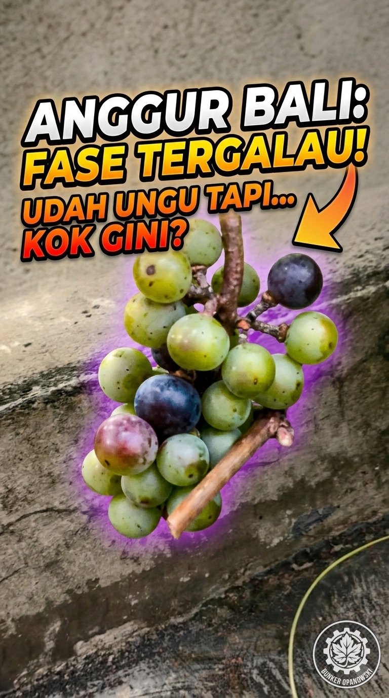

Pagi-pagi ngecek kebun, nemu sesuatu yang bikin senyum sendiri. Anggur Bali Villa Ciracas udah mulai berubah warna — ada yang udah ungu tua, ada yang masih hijau keunguan. Belum rata, belum semua. Dan justru itu yang bikin penasaran.
Ini bukan masalah. Ini tanda bahwa sesuatu yang menarik lagi terjadi — fase yang namanya veraison.


"Setiap pagi ngecek kebun dan nemu perubahan kayak gini — ini yang bikin berkebun nggak pernah boring, bray. 🍇"
1. Veraison: Titik Balik Sebelum Panen
Banyak yang nggak tau, tapi di dunia berkebun anggur ada satu fase yang paling ditunggu-tunggu: veraison. Ini adalah momen ketika buah mulai akumulasi gula, perubahan warna terjadi, dan tekstur mulai berubah dari keras ke lembut.
Di fase ini, buah-buah dalam satu tandan nggak seragam — wajar. Yang satu udah ungu tua, tetangganya masih hijau. Ini proses alami yang butuh waktu, dan nggak ada cara untuk ngebut-in dia.
2. Kondisi Hari Ini: Sebagian Ungu, Sebagian Masih Muda
Gw amatin tandan demi tandan pagi ini. Nggak semua sama. Dan itu justru menarik — bisa diliat prosesnya lebih jelas.

"Tandan yang satu udah ungu gelap, sebelahnya masih ijo. Normal? Ya normal — tapi tetep aja bikin penasaran kenapa bisa beda jauh gitu. 🤔"
Ungu tua (matang lebih awal). Sudah penuh warna, tekstur mulai lunak. Ini yang paling dekat panen.
Ungu muda (di tengah proses). Warna belum rata, masih ada campuran hijau-ungu. Tunggu beberapa hari lagi.
Hijau (belum mulai). Masih keras, belum ada tanda perubahan warna. Sabar, gilirannya pasti dateng.
Ini yang bikin berkebun seru: lo bisa literally lihat waktu berjalan. Setiap hari ada perubahan, setiap pagi ada sesuatu yang beda dari kemarin.
3. Jangan Dipaksa — Biarkan Prosesnya
Ada godaan yang real ketika ngeliat sebagian udah ungu gelap dan cantik: ngerasa pengen langsung petik semua. Tapi itu kesalahan yang paling sering dilakuin pemula (dan gw pernah jatuh ke sana juga).
Anggur yang dipanen sebelum benar-benar matang rasanya sepat dan asam, karena kadar gulanya belum optimal. Tunggu sampai mayoritas tandan sudah ungu rata dan buah terasa lunak saat ditekan ringan.
Gw masih nunggu sampai rata dulu. Kalau sudah 80–90% tandan di pohon udah ungu gelap dan konsisten, baru kita bicara panen.
4. Pelajaran Berkebun: Sabar Itu Strategi
Berkebun itu ngajarin hal-hal yang nggak ada di buku — atau mungkin ada, tapi beda rasanya kalau lo alamin sendiri.
Salah satunya ini: sabar bukan kelemahan. Petani yang sabar nunggu veraison selesai dengan benar akan panen anggur yang jauh lebih manis daripada yang buru-buru. Nature rewarding patience — literally.
Dan ini berlaku di luar kebun juga. Banyak hal yang hasilnya baru keliatan setelah lo cukup sabar buat nunggu prosesnya selesai. Proyek, rencana, hubungan — semuanya punya "fase veraison"-nya sendiri.

"Sabar nunggu veraison selesai = investasi rasa manis panen nanti. Tetap semangat, tetap amatin! 💪"

"Ini yang gw suka dari berkebun — setiap hari ada insight baru. Bukan cuma soal tanaman, tapi soal cara ngeliat proses. 🌱"
5. Update Kebun: Lainnya di Villa Ciracas
Sementara nunggu Anggur Bali, ada dua tanaman lain yang juga lagi di fase menarik di Villa Ciracas.

"Anggur Bali udah mulai ungu, tapi gw nggak buru-buru. Panen yang baik butuh nunggu yang sabar. 🍇"

📌 Penutup
Fase veraison ini selalu bikin deg-degan — tapi juga selalu bikin kagum. Alam punya ritmenya sendiri, dan tugas gw cuma mastiin kondisi terbaik buat dia berkembang: siraman pas, sinar matahari cukup, dan kesabaran yang konsisten.
Kalau lo juga lagi nanem anggur atau tanaman buah lain, gw penasaran — di fase apa sekarang? Share di kolom komen!
Tetap autodidak, tetap berkah! 🏴Lo juga nanem anggur? Tim panen awal atau nunggu rata dulu? Kabarin! 🍇